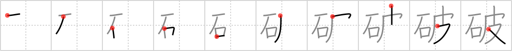

破
← →
rend

Reading:
On-Yomi: ハ — Kun-Yomi: やぶ.る、やぶ.れる
Heisig story:
Rock . . . pelt.
Koohii stories:
1) [johnskb] 13-6-2006(294): Before the invention of scissors or knives, sharp STONES were used to REND PELTs, so that caveman designers could complete new styles for the upcoming year.
2) [dingomick] 21-2-2007(80): Rend is a violent, primitive kind of word. (Image: cavemen rending pelts right off live animals with stone tools).
3) [Sunnan] 24-8-2008(39): Me Ugg. Me have rock. Me rend pelt with rock.
4) [Harrow] 28-11-2008(9): Hobbes is stalking with his belly low to the ground when a sharp stone rends his pelt (he is, after all, a stuffed animal).
5) [brainrobert1] 26-12-2010(7): Rock + pelt = rend. He then took a sharpened STONE to the PELT and rended it from the flesh.. 破る yaburu to tear or rip.